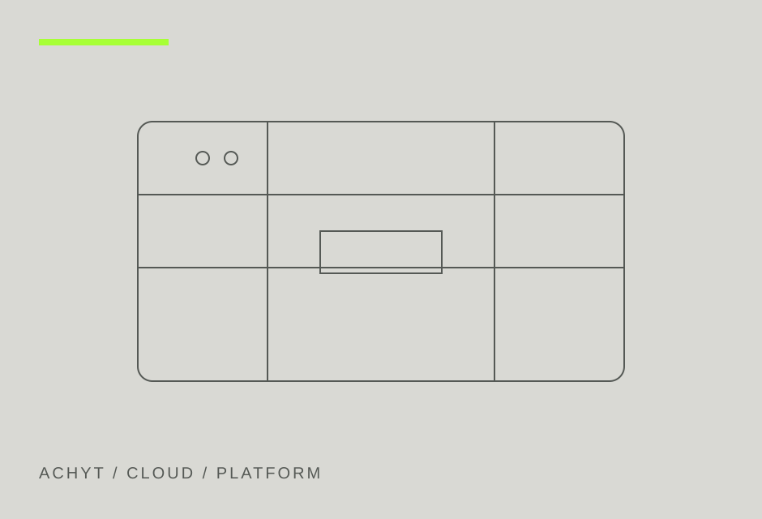

Cloud & Platform Engineering
Cloud foundations that teams can actually operate.

THE WORK
Built for the
operating reality.
Secure cloud architecture, developer platforms, infrastructure automation, Kubernetes, observability, and reliability practices built around the way your teams deliver software.
Our role can range from architecture and technical direction to hands on implementation, platform engineering, security integration, and operational enablement. The goal is a system your team can understand, run, and evolve.
WHAT WE DELIVER
- Cloud landing zones and architecture
- Platform engineering and golden paths
- Kubernetes and container platforms ↗
- Helm charts and application packaging ↗
- Infrastructure as code
- Observability and reliability engineering
- Cloud security and cost controls
HOW WE ENGAGE
Understand
Map constraints, users, dependencies, data boundaries, security requirements, and current operating pain.
Design
Define the target architecture, delivery path, controls, interfaces, and operational model before unnecessary complexity enters the system.
Build
Implement the platform with automation, documentation, observability, and repeatable delivery built in from the start.
Transfer
Leave your team with a system they can operate, troubleshoot, update, and extend with confidence.
Make the
constraint useful.
Tell us what the environment must protect, where it must run, and what your team needs it to do.
hello@achyt.com ↗